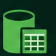
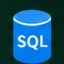
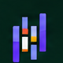
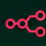

Financial Overview Dashboard
A reporting layout for financial and operational measures.
FEATURED PROJECTS
A selection of projects that shows how I turn ideas into clear, useful work.
View all projectsA collection of data analytics and web development projects built to solve real problems and create meaningful impact.
POWER BI
A financial and operational reporting layout for revenue, profit, cost, and location analysis.
View projectWEB APP
A modern web application for tracking books, reading sessions, notes, and reading goals.
View projectWEB APP
A recipe discovery experience for finding Filipino dishes and organizing everyday meal ideas.
View projectNo projects match this filter yet.
SKILLS
A focused set of tools and technologies I use to analyze data, automate workflows, and turn ideas into real impact.
Turn data into clear and actionable insights.

Power PivotWork with data, write code, and build scalable solutions.

SQL
PandasAutomate repetitive tasks and connect tools to save time.

n8nExplore AI tools to work smarter and create better solutions.
ABOUT ME
I started my career in operations reporting, where I developed a strong foundation in data analysis, reporting, and process improvement. Over time, I discovered my passion for turning data into clear and actionable insights through Power BI, Excel, and automation tools.
I’m always eager to learn new skills, explore better ways of working, and take on challenges that help me grow—both professionally and personally.
Always exploring new tools, ideas, and perspectives.
I enjoy working on projects that create real value.
I like finding practical solutions to real-world challenges.
Good books, good food, and time with family keep me inspired.
A few things I enjoy outside of data:
Imus, Cavite, PhilippinesGMT+8 · Philippine Time
CONTACT
Let’s talk about Power BI, reporting automation, or a data problem that needs a clearer answer.
Send an email